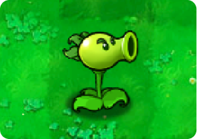

Back to Plants

Repeater
 200
200
 Normal
Normal
 Fast
Fast
 Normal
Normal
Level Acquired:
Level 1-8
Repeaters fire two peas at a time.
Repeater is fierce. He's from the streets. He doesn't take attitude from anybody. plant or zombie, and he shoots peas to keep people at a distance. Secretly, though,Repeater yearns for love.
Plant Description
- Repeater is a peashooting plant appearing in Plants vs. Zombies as well as their Chinese spin-offs.
- He can be upgraded to the Gatling Pea for 250 sun upon purchasing from Crazy Dave's Twiddydinkies for $5000.
Strategies
- Overall, Repeater could be considered as two Peashooters combined into a single plant, with double the firepower and sun cost of the average Peashooter, and the benefit of space conservation, costing less than 2 Peashooters, and a faster recharge rate. This means that while the player will have more difficulty deploying Repeater early, the plant itself will prove to be much more useful as the level progresses. This is further improved by the fact that Gatling Pea, Repeater's upgrade, is capable of the highest damage per second potential in the game under the right condition. Like other pea-firing plants, Repeater benefits greatly from the use of Torchwood, as the latter can ignite peas passing through it, doubling their damage and giving them small splash damage.